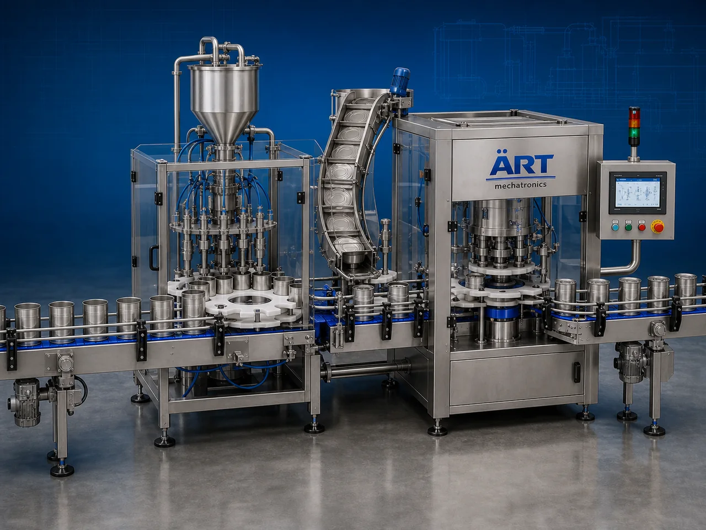

Tin Box Packing Machine (Automatic Tin Filling & Packaging System)
A Tin Box Packing Machine, also known as a Tin Filling Machine, Tin Container Packaging Machine, Metal Box Packing Machine, or Automatic Tin Box Filling System, is an advanced industrial packaging solution designed for automatic product filling, tin feeding, weighing, dosing, box loading, sealing, coding, and high-speed retail packaging operations for tea, tobacco, spices, dry fruits, confectionery products, FMCG goods, and premium consumer packaging applications.

About the Tin Box Packing
Tin box packing systems are widely used for:
- Tea tin packaging
- Tobacco tin filling
- Spice tin box packaging
- Dry fruit tin packing
- Confectionery tin packaging
- FMCG premium retail packaging
- Luxury product packaging
- Airtight container packaging
The machine improves:
- Product protection
- Aroma retention
- Moisture resistance
- Packaging appearance
- Shelf appeal
- Production efficiency
- Packaging consistency
Industrial tin box packing machines use:
- Automatic tin feeding systems
- Servo synchronized filling systems
- PLC and HMI automation controls
- Precision weighing and dosing mechanisms
- Sealing and coding systems
to automatically fill and seal tin boxes with superior packaging quality and high production efficiency.
Tin box packing machines are widely used in industries such as:
Tea industries Shisha tobacco industries Pan masala industries Spice industries Dry fruit industries Confectionery industries FMCG industries Premium retail packaging industries
where premium packaging, moisture protection, and luxury product presentation are essential.
The machine is highly suitable for:
- Tea tin box packaging
- Tobacco tin filling
- Spice tin packing
- Dry fruit tin packaging
- Premium FMCG packaging
- Luxury retail packaging
ART Mechatronics offers high-performance tin box packing machines, engineered for continuous industrial operation, accurate product filling, premium packaging quality, and reliable long-term packaging automation.
Working Principle of Tin Box Packing Machine
- 1. Tin Box Feeding Empty tin boxes are automatically fed into packaging line through synchronized conveyor systems.
- 2. Product Weighing & Dosing Process Machine automatically weighs and doses products into tin containers with precision control.
Servo synchronization ensures accurate filling and smooth product handling.
- 3. Tin Filling Operation Machine handles: ✔ Tea products ✔ Tobacco products ✔ Spices ✔ Dry fruits ✔ Confectionery products ✔ FMCG products ✔ Premium retail products
accurately and continuously.
- 4. Lid Placement & Sealing Process Machine performs: Lid placing Tin sealing Press fitting Vacuum sealing (optional) Barcode printing
for premium retail packaging quality.
- 5. Coding & Inspection Integration Optional systems include: Batch coding Date printing QR code printing Vision inspection Check weighing
- 6. Finished Tin Discharge Finished tin boxes discharged automatically for: Cartoning Case packing Retail distribution Export shipment handling
Types of Tin Box Packing Machines
- 1. Tea Tin Filling Machine Designed for: ✔ Tea and beverage packaging applications
- 2. Tobacco Tin Packaging Machine Suitable for: ✔ Shisha tobacco and smoking product packaging systems
- 3. Spice Tin Box Packing Machine Uses: ✔ Spice and seasoning retail packaging systems
- 4. Dry Fruit Tin Packaging Machine Designed for: ✔ Premium dry fruit and confectionery packaging systems
- 5. Servo Driven Tin Box Packing Machine Suitable for: ✔ Precision high-speed filling operations
- 6. Fully Automatic Tin Packaging System Designed for: ✔ Complete industrial retail packaging automation lines
Industries Using Tin Box Packing Machines
🍃 Tea Industry Tea tin packaging and aroma-protected retail packaging systems. 🚬 Tobacco Industry Shisha tobacco, oral nicotine products, and premium tobacco tin packaging systems. 🌶️ Spice Industry Masala products, seasoning products, and spice tin box packaging systems. 🥜 Dry Fruit Industry Dry fruits, nuts, seeds, and premium food tin packaging systems. 🍬 Confectionery Industry Candy, chocolates, sweets, and luxury confectionery packaging systems. 🛒 FMCG Industry Consumer product premium retail packaging systems.
Features & Advantages
- High-speed automatic tin box filling and packaging operation
- Accurate weighing and synchronized filling systems
- Premium airtight retail packaging appearance
- PLC and servo automation control systems
- Improves product freshness and moisture protection
- Reduces packaging wastage and labor dependency
- Supports multiple tin box sizes and product formats
- Reliable long-term industrial performance
- Smooth and continuous packaging operation
Technical Highlights
Machine Type: Automatic tin box packing machine Industrial tin filling machine Metal container packaging system Packaging Material: Tin boxes Metal containers Decorative tins Premium retail containers Filling Integration: Load cell weighing systems Servo dosing systems Volumetric filling systems Features: PLC control system Servo synchronization Touchscreen HMI Batch coding integration Automatic lid placement Sealing Type: Press fit sealing Vacuum sealing Lid locking systems Automation: Semi-automatic Fully automatic industrial systems
Turnkey Tin Box Packing Solutions
ART Mechatronics offers: Complete tin box packaging systems Automatic tin filling solutions Packaging automation integration systems Conveyor synchronization systems Installation & commissioning After-sales service & AMC
Why Choose Art Mechatronics
Expertise in industrial packaging and automation systems Customized tin box packaging solutions for multiple industries High-performance and durable packaging technology Advanced PLC and servo automation systems Proven industrial packaging performance across sectors
Applications
Tea Processing Industries Shisha Tobacco Manufacturing Plants Spice Packaging Facilities Dry Fruit Packaging Industries Confectionery Manufacturing Plants Premium FMCG Packaging Units
Get pricing & specs for the Tin Box Packing
Share the product, target capacity, current process and plant location. These details help our engineers discuss the right machine or line configuration.
One partner, from design to start-up
ART Mechatronics designs, manufactures, installs and commissions your Tin Box Packing solution with regional presence in India, UAE and Thailand.